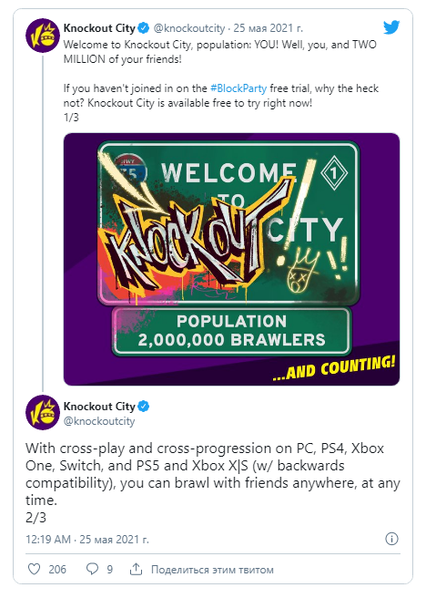

Платформа: NSW, PC, PS4, PS5, XBOXSX, XONE
Жанр: action , sport
Дата выхода: 2021 г.
Разработчик: Velan Studios
Издатель: Electronic Arts
Перед релизом онлайн-вышибалы Knockout City выглядели слишком тёмной лошадкой: очередной мультяшный мультиплеер,
за который ещё и денег просят! Но запуск столкнул проект с мёртвой точки: у Knockout City и отзывы хорошие,
и аудитория нашлась.
Разработчики объявили, что количество пользователей игры превысило два миллиона.
Это наверняка заслуга пробной версии — первые десять дней после релиза в Knockout City можно играть бесплатно.
Оценки геймеров в Steam крайне положительные — 96 % на момент написания новости.
В отзывах удивляются тому, насколько игра на самом деле бойкая и глубокая в своих механиках,
а также тому, как свежо она чувствуется на фоне шутеров и королевских битв.
В прессе вышибал тоже встречают тепло — в среднем они получают 80 баллов из 100.

Входных точек у Knockout City хватает:
Как принято во всех современных мультиплеерных играх, у Knockout City уже есть план накачки
бесплатным контентом — например,
сегодня стартует первый сезон с новой картой, новым плейлистом
и соревновательным режимом.